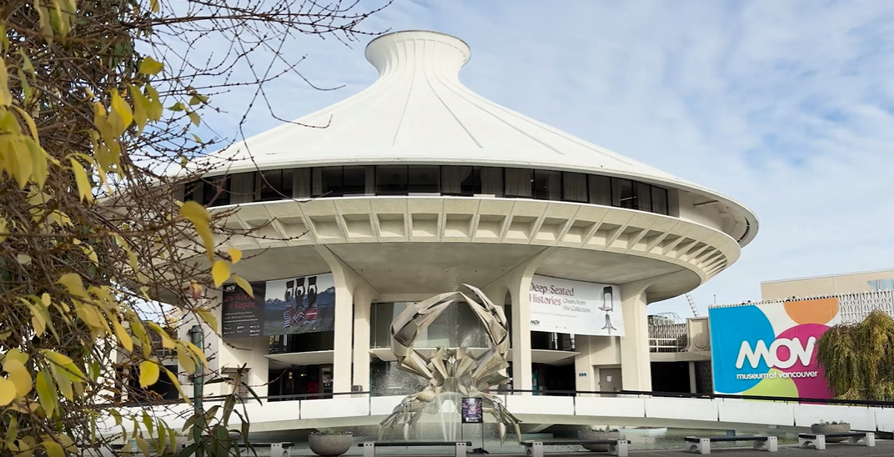

Reimagining the MOV Galleries: Community Perspectives
Duration
7 Weeks
My Role
Editor
Contributors
Kelly Wang
Sara Dehghani
Project Description
A short documentary created to support the Museum of Vancouver’s upcoming Vancouver Galleries redevelopment. The film captures community perspectives, highlights what visitors hope to see in the reimagined space, and contributes to MOV’s early engagement and storytelling efforts.
Add additional context, extra images, or breakdown sections. This page is meant to expand and tell the full story behind your work.
Back to Portfolio